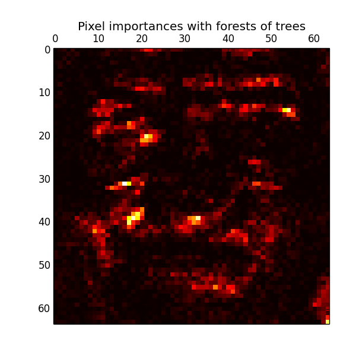

Pixel importances with a parallel forest of trees¶
This example shows the use of forests of trees to evaluate the importance of the pixels in an image classification task (faces). The hotter the pixel, the more important.
The code below also illustrates how the construction and the computation of the predictions can be parallelized within multiple jobs.
Script output:
Fitting ExtraTreesClassifier on faces data with 1 cores...
done in 0.875s
Python source code: plot_forest_importances_faces.py
print(__doc__)
from time import time
import matplotlib.pyplot as plt
from sklearn.datasets import fetch_olivetti_faces
from sklearn.ensemble import ExtraTreesClassifier
# Number of cores to use to perform parallel fitting of the forest model
n_jobs = 1
# Load the faces dataset
data = fetch_olivetti_faces()
X = data.images.reshape((len(data.images), -1))
y = data.target
mask = y < 5 # Limit to 5 classes
X = X[mask]
y = y[mask]
# Build a forest and compute the pixel importances
print("Fitting ExtraTreesClassifier on faces data with %d cores..." % n_jobs)
t0 = time()
forest = ExtraTreesClassifier(n_estimators=1000,
max_features=128,
n_jobs=n_jobs,
random_state=0)
forest.fit(X, y)
print("done in %0.3fs" % (time() - t0))
importances = forest.feature_importances_
importances = importances.reshape(data.images[0].shape)
# Plot pixel importances
plt.matshow(importances, cmap=plt.cm.hot)
plt.title("Pixel importances with forests of trees")
plt.show()
Total running time of the example: 1.05 seconds ( 0 minutes 1.05 seconds)